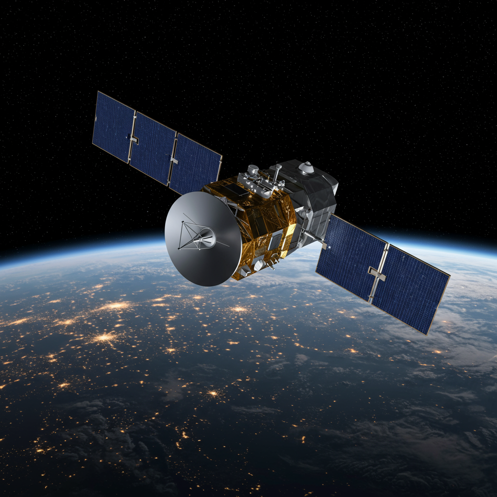

INTELSAT
Fecha de lanzamiento: 6 de abril de 1965 (Intelsat I “Early Bird”)
Agencia o país: Organización internacional INTELSAT (inicialmente EE. UU. y países miembros)
Objetivo
Establecer una red global de satélites de comunicaciones para servicios de telefonía, televisión y transmisión de datos. INTELSAT fue el pionero en conectar el planeta con infraestructura orbital comercial.
Actividad y evolución
Desde 1965, INTELSAT ha desplegado múltiples generaciones de satélites. Actualmente opera satélites geoestacionarios de alto rendimiento, brindando conectividad global a gobiernos, aerolíneas, medios y proveedores de internet. La organización se privatizó en 2001.
Evento histórico destacado
En 1973, el satélite INTELSAT IV F-4 protagonizó un acontecimiento sin precedentes: la transmisión mundial del concierto "Aloha from Hawaii via Satellite", ofrecido por Elvis Presley desde el Honolulu International Center. Por primera vez, un evento musical fue difundido en directo por medio de un satélite geoestacionario, alcanzando a más de 1.5 mil millones de espectadores en Asia, Oceanía y América Latina. Este logro marcó la unión definitiva entre la comunicación espacial y la cultura global.

Estado actual
INTELSAT continúa activo, operando más de 50 satélites. Participa en redes 5G, cobertura marítima y soluciones aeroespaciales. Se ha consolidado como un actor esencial en el ecosistema global de telecomunicaciones satelitales.
⬅ Volver al Archivo de Satélites